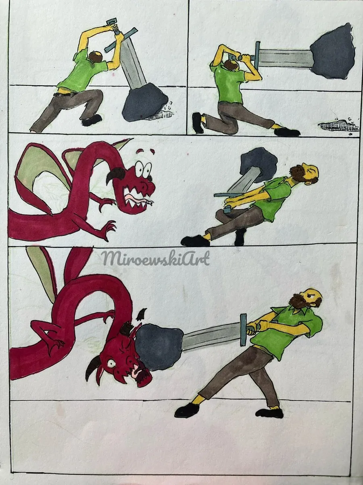

Hi.
I’m an independent AI researcher building swarm intelligence and decentralized systems.
Lessons in Adaptation from Software Engineering
or: AI as a double edged sword
A talk by Jason Edelman for ODU’s art department · September 11, 2026
Hi.
I’m an independent AI researcher building swarm intelligence and decentralized systems.
| Who | Why/For What | |
|---|---|---|
| Uses AI |
|
|
| Refuses AI |
|
|
What does this mean for the world of art?
What does this mean for higher education?
To return to the metaphor, the algorithms are like mining tools, bringing ore to the surface. But an AI system is like a forge. The raw material is already present, however it got there.
The forge is a system that:
The arrangement of these technical processes and the relationships between them is determined by social practices!
ERROR: attempted to divide by zero)“AI” is the social acceptance of computers that make mistakes (pre-AI standard was 99.9+% accuracy; post-AI is 40-70% or less) or have ambiguous output.
Objects cannot be neatly classified as tool or weapon. Once made, one cannot say what its effect will be.
To extend the metaphor, AI is a new kind of blade.
Some things are good for you to do yourself. Automation here is harmful.
For other things, their difficulty ennobles no one. These are things worth automating, wholly or partially
Other things are not so clearly distinguished. This is where the conversation is needed. How do you feel about automating:
Only you can identify what problems you think are worth solving!
Only we can determine what problems we believe are worth solving!
